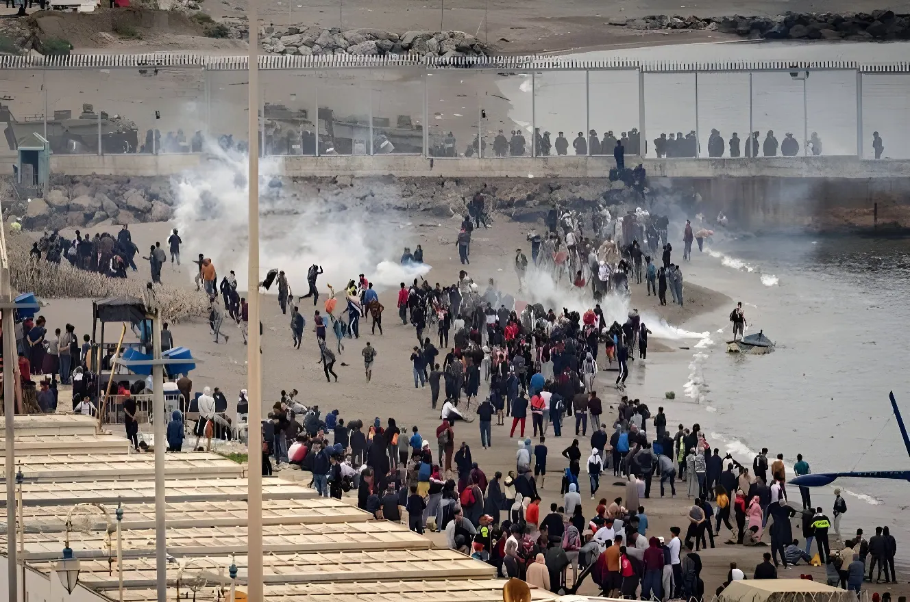

Les 30 et 31 juillet 2026, entre 60 000 et 70 000 personnes ont tenté de pénétrer dans l'enclave espagnole de Ceuta depuis le Maroc, dans le plus important afflux migratoire enregistré à cette frontière depuis 2021. Déclenchée par une vague de rumeurs sur les réseaux sociaux, cette crise a fait au moins 83 morts, ravivé les tensions diplomatiques entre Madrid et Rabat, et relancé le débat sur la gestion des frontières extérieures de l'Union européenne.
Tout commence par une série de publications virales sur Instagram, TikTok et Facebook affirmant, à tort, que la frontière entre le Maroc et l'Espagne était sur le point de s'ouvrir. Un compte Instagram baptisé « Haraga Ceuta » — terme désignant en dialecte marocain les jeunes candidats à l'émigration clandestine — annonce l'imminence d'un passage libre. Des vidéos TikTok détaillent l'itinéraire à suivre à la nage, tandis que des groupes Facebook comme « Fnideq Bab Sebta » partagent des captures d'écran de plateformes de suivi maritime pour repérer les créneaux où les patrouilles des garde-côtes semblent les moins nombreuses.
En quelques heures, des milliers de jeunes Marocains convergent vers la ville de Fnideq et le village voisin de Belyounech, à la frontière de Ceuta. Autobus bondés, trains de banlieue saturés, taxis pris d'assaut : le mouvement prend une ampleur inédite. Selon les estimations du ministère espagnol de l'Intérieur, jusqu'à 70 000 personnes tentent de franchir la frontière en l'espace de deux jours, essentiellement à la nage le long des enrochements des plages d'El Tarajal et de Benzú, quelques tentatives étant également recensées du côté de Melilla.
Sur l'étroite digue de béton du Tarajal, la ruée simultanée de milliers de personnes provoque des scènes de bousculade dramatiques. Plusieurs migrants racontent avoir vu des proches tomber à l'eau et se retrouver piégés sous la foule, incapables de refaire surface. Le bilan humain, d'abord estimé à 34 morts par les autorités locales le 31 juillet, est révisé à la hausse dans les jours suivants, jusqu'à au moins 83 morts selon un décompte publié le 4 août (72 côté espagnol, 11 côté marocain), avec plusieurs dizaines de personnes toujours portées disparues.
Diffusion virale de rumeurs sur l'ouverture de la frontière. Départs massifs depuis Fnideq et Belyounech vers Ceuta.
Pic de la crise : jusqu'à 70 000 tentatives d'entrée en 24 h. Premier bilan officiel de 34 morts annoncé par le président de Ceuta.
Retour volontaire ou reconduite au Maroc de la grande majorité des migrants entrés dans l'enclave.
Ceuta affirme avoir alerté Madrid en amont ; le ministère de l'Intérieur dément avoir reçu un signalement. Réactions internationales : Donald Trump évoque une « invasion », Ursula von der Leyen appelle à un renforcement des frontières, Vox réclame une frontière militarisée.
Bilan porté à au moins 83 morts. Des enquêtes sont ouvertes au Maroc et en Espagne sur l'origine des rumeurs et l'éventuel rôle de réseaux de passeurs.
La crise trouve aussi sa source dans une double confusion juridique. D'une part, le gouvernement de Pedro Sánchez avait engagé, début 2026, une régularisation extraordinaire des étrangers déjà présents sur le sol espagnol avant le 1er janvier — potentiellement plusieurs centaines de milliers de personnes, pour l'essentiel des ressortissants d'Amérique latine entrés légalement puis restés au-delà de la durée de leur visa. Relayée et déformée sur les réseaux marocains, cette mesure a été comprise par beaucoup comme une promesse de régularisation pour quiconque parviendrait à entrer sur le territoire espagnol.
D'autre part, le Tribunal suprême espagnol avait confirmé, le 8 juillet 2026, que la loi ne permettait pas les « devoluciones en caliente » — les renvois à chaud, sans procédure — des migrants entrant à la nage à Ceuta et Melilla. Cette décision, destinée à encadrer juridiquement les reconduites, a été interprétée à tort par une partie des candidats au départ comme la garantie de pouvoir rester une fois la frontière franchie.
« La situation est intenable. »
— Juan Jesús Vivas, président de la ville autonome de Ceuta, 31 juillet 2026Au-delà du facteur déclencheur numérique, la crise de Ceuta plonge ses racines dans des réalités socio-économiques persistantes. Le Maroc affiche une croissance économique attendue autour de 4,5 % en 2026, portée par l'essor industriel et portuaire et l'ambition de devenir un pôle régional de l'automobile. Mais cette dynamique macroéconomique ne se traduit pas en emplois pour une majorité de jeunes : le taux de chômage des 15-24 ans avoisine 37 %, et atteint près de 20 % chez les diplômés de l'enseignement supérieur.
Pour beaucoup de candidats au départ, l'image de proches revenus d'Europe avec voiture, vêtements neufs et devises alimente un imaginaire de réussite rapide, entretenu par les réseaux sociaux. Plusieurs migrants revenus au Maroc après leur tentative rejettent par ailleurs l'explication mise en avant par Rabat et Madrid d'un afflux organisé par des réseaux de passeurs, affirmant avoir agi de leur propre initiative après avoir cru la frontière ouverte.
| Étape | Dates | Éléments clés |
|---|---|---|
| Déclenchement | 30 juil. | Rumeurs virales, départs massifs depuis Fnideq |
| Pic de la crise | 31 juil. | 60 000–70 000 tentatives, chaos digue du Tarajal |
| Reflux | 1er–2 août | Retour volontaire ou reconduite au Maroc |
| Réactions internat. | 3–4 août | Trump, von der Leyen, Vox ; bilan à 83 morts |
La crise de l'été 2026 illustre la vulnérabilité structurelle de la frontière sud de l'Europe face à des dynamiques qu'aucun acteur ne maîtrise entièrement : viralité incontrôlable des réseaux sociaux, dépendance de Madrid à la coopération marocaine pour contenir les départs, fragilité des dispositifs d'alerte entre administrations locales et nationales, et poids persistant du chômage des jeunes au Maghreb. Elle met aussi à l'épreuve, quelques semaines après son entrée en application, le nouveau pacte européen sur la migration et l'asile, censé organiser une réponse solidaire entre États membres. Si la grande majorité des personnes entrées à Ceuta sont reparties dans les jours suivants, l'épisode laisse une frontière plus surveillée, une relation hispano-marocaine de nouveau fragilisée, et la perspective que de nouvelles rumeurs, spontanées ou savamment orchestrées, puissent à tout moment rallumer la mèche.
Los días 30 y 31 de julio de 2026, entre 60 000 y 70 000 personas intentaron entrar en el enclave español de Ceuta desde Marruecos, en la mayor oleada migratoria registrada en esta frontera desde 2021. Desencadenada por una ola de rumores en las redes sociales, esta crisis dejó al menos 83 muertos, reavivó las tensiones diplomáticas entre Madrid y Rabat, y relanzó el debate sobre la gestión de las fronteras exteriores de la Unión Europea.
Todo comienza con una serie de publicaciones virales en Instagram, TikTok y Facebook que afirmaban, erróneamente, que la frontera entre Marruecos y España estaba a punto de abrirse. Una cuenta de Instagram llamada « Haraga Ceuta » —término que designa, en dialecto marroquí, a los jóvenes que intentan emigrar clandestinamente— anunciaba un paso libre inminente. Vídeos de TikTok detallaban la ruta a nado, mientras que grupos de Facebook como « Fnideq Bab Sebta » compartían capturas de plataformas de seguimiento marítimo para identificar los momentos en que las patrullas de la guardia costera parecían más escasas.
En cuestión de horas, miles de jóvenes marroquíes convergieron hacia la ciudad de Fnideq y la vecina localidad de Belyounech, en la frontera con Ceuta. Autobuses abarrotados, trenes de cercanías saturados, taxis desbordados: el movimiento adquirió una magnitud inédita. Según las estimaciones del ministerio español del Interior, hasta 70 000 personas intentaron cruzar la frontera en el espacio de dos días, sobre todo a nado a lo largo de los espigones de las playas de El Tarajal y Benzú, con algunos intentos también registrados en Melilla.
En el estrecho espigón de hormigón de El Tarajal, la avalancha simultánea de miles de personas provocó escenas de aglomeración dramáticas. Varios migrantes relatan haber visto a personas cercanas caer al agua y quedar atrapadas bajo la multitud, incapaces de volver a la superficie. El balance humano, estimado inicialmente en 34 muertos por las autoridades locales el 31 de julio, fue revisado al alza en los días siguientes, hasta alcanzar al menos 83 muertos según un recuento publicado el 4 de agosto (72 del lado español, 11 del lado marroquí), con varias decenas de personas aún desaparecidas.
Difusión viral de rumores sobre la apertura de la frontera. Salidas masivas desde Fnideq y Belyounech hacia Ceuta.
Pico de la crisis: hasta 70 000 intentos de entrada en 24 h. Primer balance oficial de 34 muertos anunciado por el presidente de Ceuta.
Retorno voluntario o devolución a Marruecos de la gran mayoría de los migrantes entrados en el enclave.
Ceuta afirma haber alertado a Madrid con antelación; el ministerio del Interior niega haber recibido aviso alguno. Reacciones internacionales: Donald Trump habla de una « invasión », Ursula von der Leyen pide reforzar las fronteras, Vox reclama una frontera militarizada.
El balance se eleva a al menos 83 muertos. Se abren investigaciones en Marruecos y España sobre el origen de los rumores y el posible papel de redes de tráfico de personas.
La crisis también tiene su origen en una doble confusión jurídica. Por un lado, el gobierno de Pedro Sánchez había puesto en marcha, a comienzos de 2026, una regularización extraordinaria de los extranjeros ya presentes en territorio español antes del 1 de enero —potencialmente varios cientos de miles de personas, en su mayoría de origen latinoamericano, entradas legalmente y que permanecieron más allá de la duración de su visado. Difundida y deformada en las redes marroquíes, esta medida fue entendida por muchos como una promesa de regularización para quien lograra entrar en territorio español.
Por otro lado, el Tribunal Supremo español había confirmado, el 8 de julio de 2026, que la ley no permite las « devoluciones en caliente » —los retornos inmediatos, sin procedimiento— de los migrantes que entran a nado en Ceuta y Melilla. Esta decisión, destinada a regular jurídicamente las devoluciones, fue interpretada erróneamente por parte de los aspirantes a emigrar como la garantía de poder quedarse una vez cruzada la frontera.
« La situación es insostenible. »
— Juan Jesús Vivas, presidente de la ciudad autónoma de Ceuta, 31 de julio de 2026Más allá del detonante digital, la crisis de Ceuta hunde sus raíces en realidades socioeconómicas persistentes. Marruecos prevé un crecimiento económico en torno al 4,5 % en 2026, impulsado por el auge industrial y portuario y la ambición de convertirse en un polo regional del automóvil. Pero esta dinámica macroeconómica no se traduce en empleo para la mayoría de los jóvenes: la tasa de desempleo entre los 15 y 24 años ronda el 37 %, y alcanza cerca del 20 % entre los titulados universitarios.
Para muchos aspirantes a emigrar, la imagen de familiares que regresan de Europa con coche, ropa nueva y divisas alimenta un imaginario de éxito rápido, reforzado por las redes sociales. Varios migrantes que regresaron a Marruecos tras su intento rechazan además la explicación esgrimida por Rabat y Madrid de un flujo organizado por redes de tráfico de personas, y afirman haber actuado por iniciativa propia tras creer que la frontera estaba abierta.
| Etapa | Fechas | Elementos clave |
|---|---|---|
| Detonante | 30 jul. | Rumores virales, salidas masivas desde Fnideq |
| Pico de la crisis | 31 jul. | 60 000–70 000 intentos, caos en el espigón de El Tarajal |
| Reflujo | 1–2 ago. | Retorno voluntario o devolución a Marruecos |
| Reacciones internac. | 3–4 ago. | Trump, von der Leyen, Vox; balance de 83 muertos |
La crisis del verano de 2026 ilustra la vulnerabilidad estructural de la frontera sur de Europa frente a dinámicas que ningún actor controla por completo: la viralidad incontrolable de las redes sociales, la dependencia de Madrid respecto a la cooperación marroquí para contener las salidas, la fragilidad de los mecanismos de alerta entre administraciones locales y nacionales, y el peso persistente del desempleo juvenil en el Magreb. La crisis también pone a prueba, pocas semanas después de su entrada en vigor, el nuevo pacto europeo sobre migración y asilo, concebido para organizar una respuesta solidaria entre los Estados miembros. Aunque la gran mayoría de las personas que entraron en Ceuta regresaron en los días siguientes, el episodio deja una frontera más vigilada, una relación hispano-marroquí nuevamente debilitada, y la posibilidad de que nuevos rumores, espontáneos o cuidadosamente orquestados, puedan reavivar la mecha en cualquier momento.